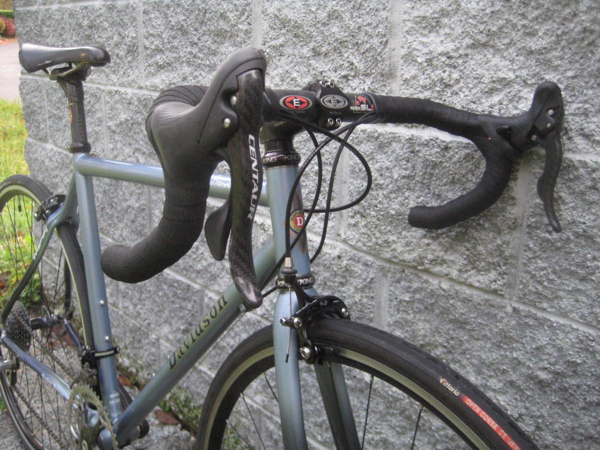
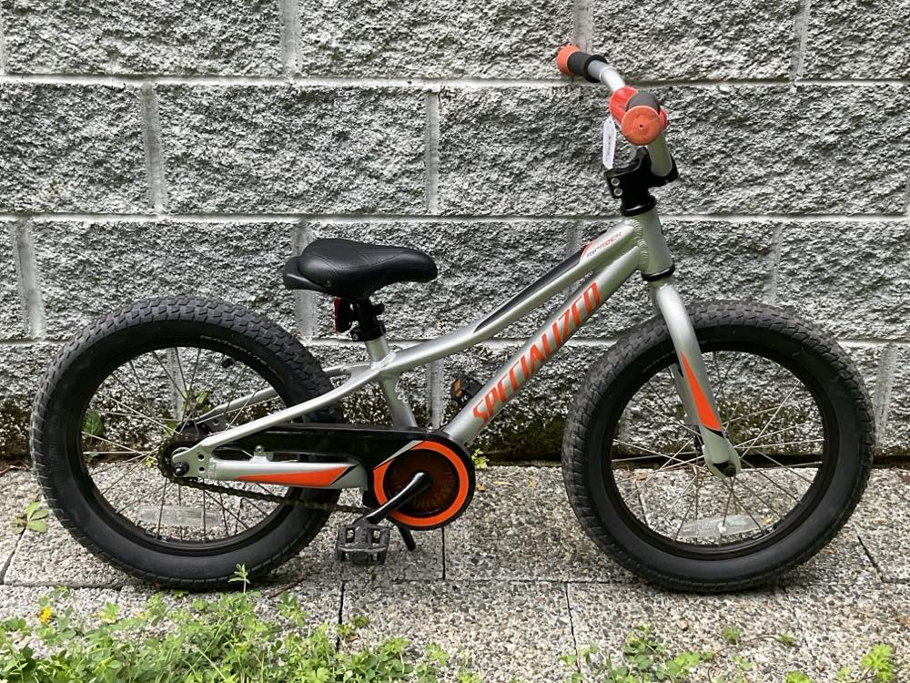

Minor tune-up & safety check
$65Brake tension and alignment, derailleur hanger and shifting adjusted, everything tightened, tires inflated, chain lubed. Makes a crashed, newly assembled or neglected bike safe to ride.
Service & prices
We pride ourselves on quick turnaround. Many minor repairs are done while you wait, lots of others are ready within 24–48 hours, and parts we need to order usually arrive within a few days.

Tune-up packages
Prices are for traditional bikes. Tandems, cargo bikes, recumbents and e-bikes typically add $20. Suspension work, hydraulic brake bleeds, internal routing or dropper-post lines can add $20–$80. We’ll tell you about any surcharge when we check in your repair.
Brake tension and alignment, derailleur hanger and shifting adjusted, everything tightened, tires inflated, chain lubed. Makes a crashed, newly assembled or neglected bike safe to ride.
Annual tune-up for a child’s bike, with fit adjusted for growth and levers set light enough for little hands. Typical parts, if needed, run $20–$40.
Safety check plus hubs, bottom bracket and headset adjusted and wheels trued. No extra charge to install accessories you buy. E-bikes & tandems $100.
The annual tune-up including labor for a couple of minor parts (brake pads, a shift cable, a tube & tire). Typical parts run $30–$75. E-bikes & tandems $120.
Annual tune-up plus the labor-intensive parts: bearings if needed, hanger, shift cables, tires, pads and cables installed. Typical parts $100–$250. E-bikes & tandems $170.
Drivetrain cleaned in the solvent tank; chain, cassette, bottom bracket, chainrings, pulleys and bar tape installation included. Typical parts $150–$250. E-bikes $190.
Stripped to the bare frame, every bearing overhauled, everything cleaned, lubed or replaced. Also the “framectomy” package for moving parts to a new frame. E-bikes & tandems $270.
A pretty comprehensive overhaul, like the Commuter Special with more cleaning, for less than a Performance Tune. November through the end of January.
We deal with Mahle, Shimano, Bosch and some Bafang motor systems regularly and have or can get replacement components easily. Other systems we may be able to work on, but you’ll probably need to track down the parts. Bikes with home-made motor conversions aren’t for us, and some e-bikes with non-standard wheel sizes, weight or custom parts (Radpower has a number like this) we can’t take on.
Bike fitting
Our fitting combines several fit philosophies with personal fit and custom-bike experience. Everyone should have at least a basic fit for a more comfortable, efficient ride. A basic fit is included with every new bike, or upgrade to a private one-on-one session by appointment.
Repair classes
Fixing a flat, sorting out a tubeless tire, removing wheels, tire maintenance, air pressure, cleaning and lubrication. Limited to 3 students and their bikes.
Braking and shifting systems on modern bikes: adjustments, cable and brake pad replacement, cleaning and lubrication. Limited to 3 students.
Want to build your own wheel or overhaul a bottom bracket? Just ask, and we’ll work out a custom curriculum.
Classes usually run on Sunday evenings in the fall and winter at 4:30. Call 206-842-9191 to reserve a spot and bring the bike you want to work on. Please give 48 hours’ notice if you have to cancel.

Trade-ins, used bikes & discounts